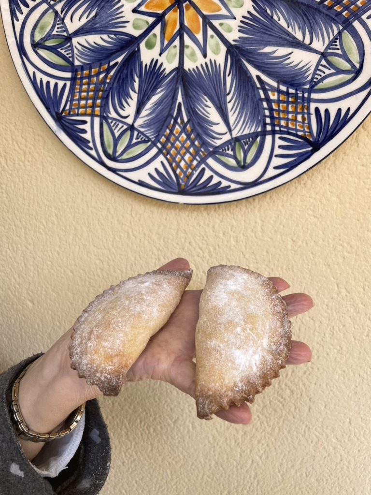
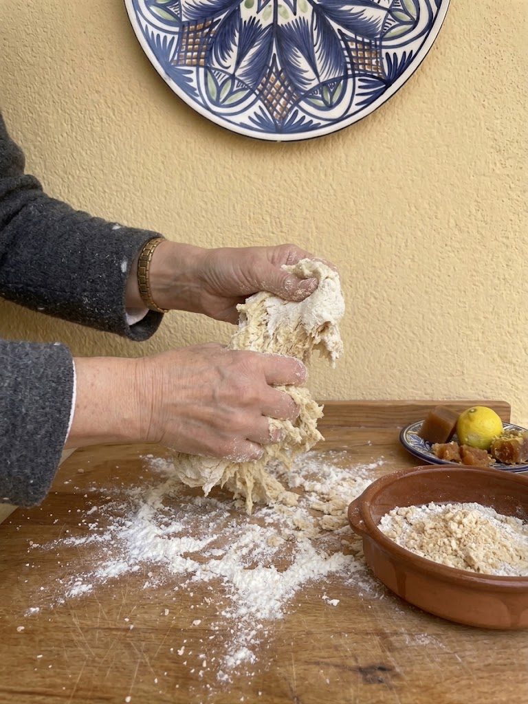
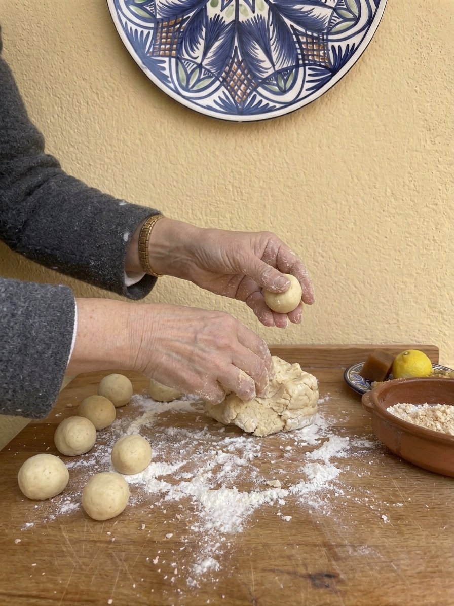
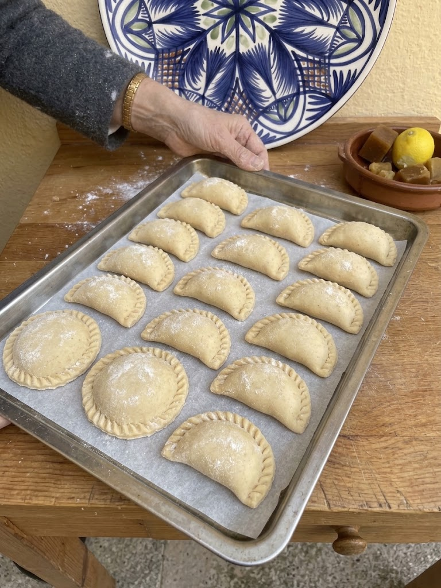

Robiols mallorquins

Ingredients (per uns 20 robiols aprox)
- 1 kg de farina de rebosteria (preferentment, sa des me vermell)
- 1 tassó de saïm
- 1 tassó d’oli (de gira-sol, d’oliva suau o, millor, mesclat)
- 1 tassó d’aigua
Elaboració
1. Fondre es saïm
- Fondre es saïm dins un recipient, en es microones mateix.
2. Barrejar els ingredients
- Col·locau sa farina dins un bol i afegiu-hi es saïm fos, s’aigua i s’oli.
3. Integrar la massa
- Mesclau-ho bé (sense amassar: només integrar i donar forma).
4. Formar les bolletes i estirar
- Feis bolletes i estirau-les amb es rodell.
5. Preescalfar el forn
- Preescalfau es forn a 200 °C.
6. Farcir i formar es robiols
- Feis es robiols amb un motlle i farciu-los amb es farcit que més vos agradi.
7. Enfornar
- Col·locau es robiols damunt una palangana de forn i enfornau-los uns 20 minuts, fins que siguin dauradets.
8. Acabat final
- Quan els lleveu des forn, espolvorejau-los amb sucre en pols.





